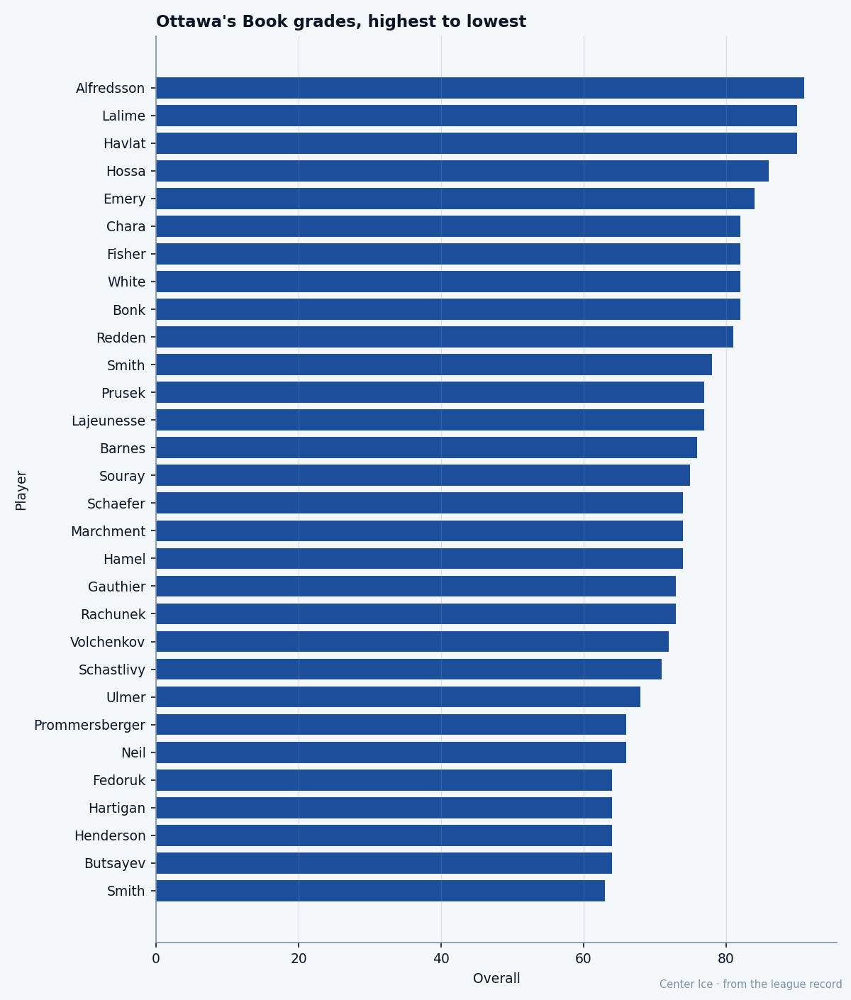

Speed 99, Ceiling 86: Martin Havlat is already past the number they gave him
The fastest man in the league is 24, on $0.90M, with zero years left and a ceiling the Bureau set one grade below where he already stands.
 Tomáš VránaProfile writer · The Sweater
Tomáš VránaProfile writer · The SweaterThe Bureau has  Martin Havlat88 at Speed 99 and Agility 99. Two grades of 99 on the same card. Acceleration sits at 98 behind them. He is 73 inches tall, 190 pounds, 24 years old, and the contract in his file says $0.90M with 0 years left on it. He will be a free agent in July.
Martin Havlat88 at Speed 99 and Agility 99. Two grades of 99 on the same card. Acceleration sits at 98 behind them. He is 73 inches tall, 190 pounds, 24 years old, and the contract in his file says $0.90M with 0 years left on it. He will be a free agent in July.
His overall is 90 today. His base grade is 87, and the Development Index has him +6. His potential, the number the Bureau prints as a ceiling, is 86.
The ceiling is behind him. He is playing at 90, a number the Bureau says he cannot reach again. He is 24.  Daniel Alfredsson89 at 33 carries $11.40M and an overall of 91. Havlat carries less than a tenth of that salary.
Daniel Alfredsson89 at 33 carries $11.40M and an overall of 91. Havlat carries less than a tenth of that salary.
The road from Mlada Boleslav
Havlat came from the Czech Extraliga. The Senators took him 26th overall in 1999, a first-round pick from a man still playing in Mlada Boleslav. He stayed a year, then crossed the ocean for the 2000-01 season and never went back. His first full campaign in the league produced 25 goals and 50 points in 48 games on 21.5 minutes a night. Nobody wrote the line.
By his third year he had two consecutive 20-goal seasons and a run to the Eastern Conference Finals. By 2003-04 he had 40 goals, 63 assists, 103 points in 82 games on 20.5 minutes a night. He also had two suspensions and 15 penalty minutes, which was the other side of a player who refuses to give ground on a puck but will not finish a check.
What the card says
The physical attributes on Havlat's card read like a different man's card. Fighting 50. Faceoffs 53. Spin-Board 54. The bottom of the page. Put those beside Speed 99 and Agility 99 and you get a player the Bureau built in two halves: the fastest skater in the league wearing the body of someone who has never wanted to be near the corner.
He carries all of it on his skating. His puck handling is 93, his deking 94, his hero ball 94. He wins the puck because he is there before the other man, not because he puts the other man down.
This season: 8 goals and 26 points in 25 games, 18 penalty minutes, 21.1 minutes a night. The pace works out to 85.3 points per 82 games. Against his $0.90M salary, that is $34,615 per point. The cheapest production on the Ottawa roster by a wide margin.

The room
 Ottawa Senators is 9-11-4 through 25 games, 24 points, sitting fourth in the Northeast.
Ottawa Senators is 9-11-4 through 25 games, 24 points, sitting fourth in the Northeast.  Wade Redden79, the top-pairing defenseman, is out with an elbow until December 22. The Senators are thin. Havlat is their second-highest overall behind Alfredsson and level with
Wade Redden79, the top-pairing defenseman, is out with an elbow until December 22. The Senators are thin. Havlat is their second-highest overall behind Alfredsson and level with  Patrick Lalime88 in net.
Patrick Lalime88 in net.
What a teammate would say about playing with Havlat: you give him the puck in space and get out of the way. He does not crash. He does not cycle. He takes it and goes, and the defense must come to him or give him the lane. The 94 in deking and the 93 in puck control mean the puck stays on his blade even when a man reaches. The 50 in fighting means no one will screen him on that first move. You watch him go and you drive the net, and you hope the goaltender's eyes are on the speed and not on your stick.
The 94 in hero ball says the rest. He will try the move he has never landed in front of a man five inches taller. He will land it three times in a game.
The number behind him
The Bureau puts his potential at 86. His base is 87. The gap is negative. This is not the same story as the veteran whose ceiling sits 20 or 30 grades below where he once was; those men are aging and the Bureau is telling them so. Havlat is 24 and still improving. His form is +6, his morale is 94, and the Bureau's own ceiling says this is the top.
The Development Index has him +6 today. On the risers list,  Marian Gaborik99 sits at +11 and Igor Radulov78 at +11, both ahead of him. At his age, that trajectory should mean the ceiling moves up. The Bureau has not moved it.
Marian Gaborik99 sits at +11 and Igor Radulov78 at +11, both ahead of him. At his age, that trajectory should mean the ceiling moves up. The Bureau has not moved it.
Ottawa has a choice to make before July. A 24-year-old wing with two 99s and an 85-point pace on $0.90M is not going to sign for $0.90M again. If the Senators want to keep him they will pay what a 90-grade player commands. The Bureau's 86 is irrelevant to the market. The market sees the 90 on the scoreboard tonight.
He has no injuries on record. No trophies yet. No suspension this season. He is 24, healthy, and playing the best hockey on a team that is two wins above .500. The contract says he belongs to Ottawa until the last horn in April. After that, the man with Speed 99 belongs to whoever prints the number that matches what his legs are doing.